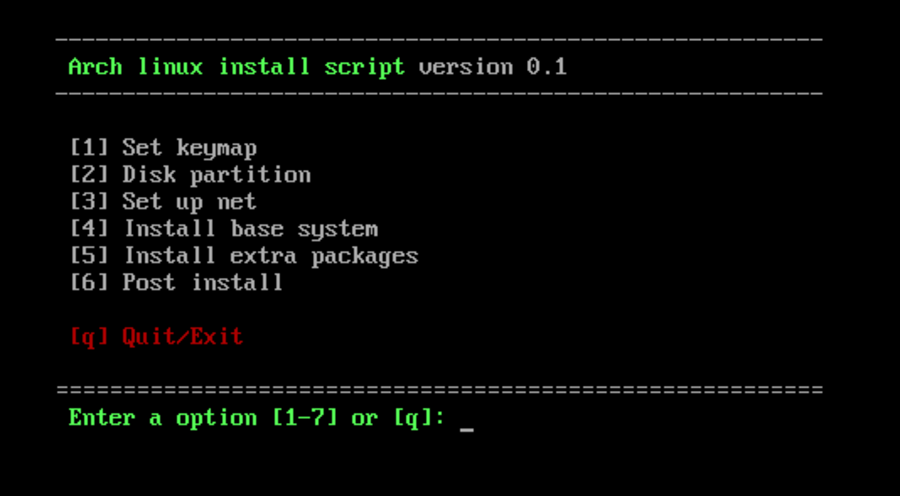
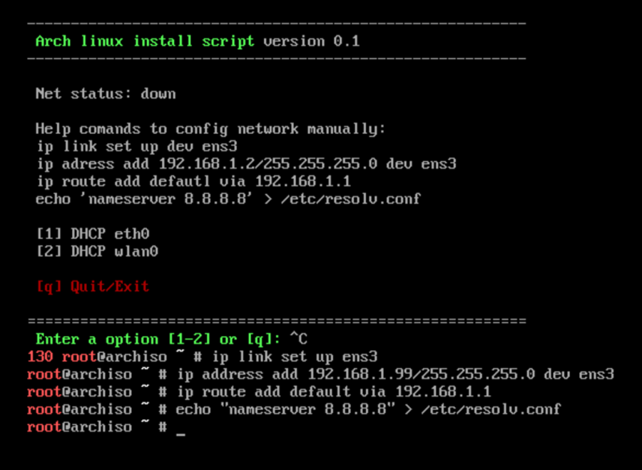
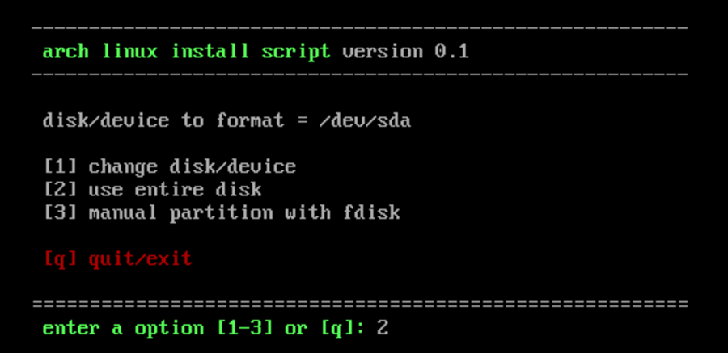
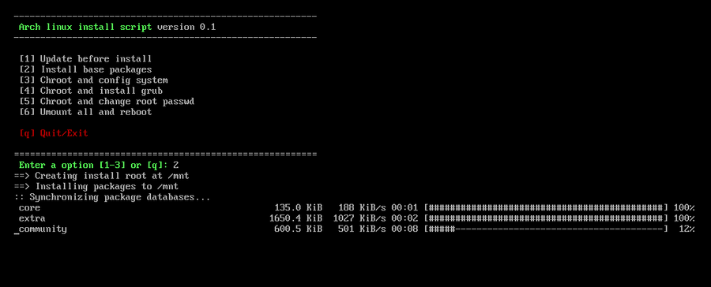
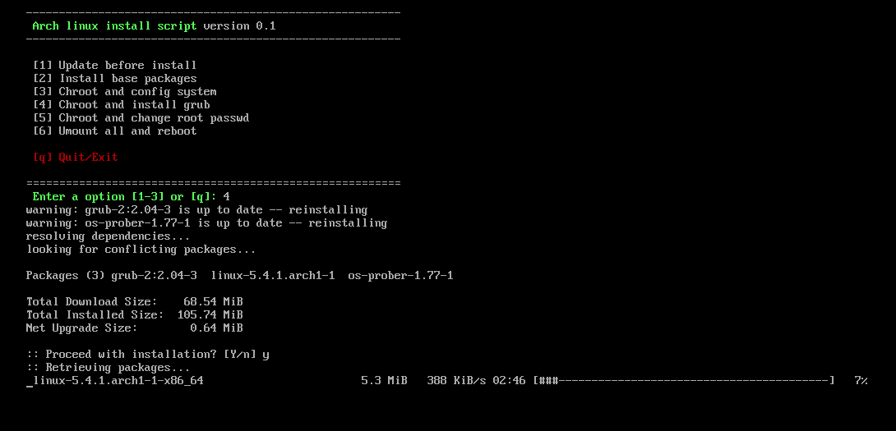
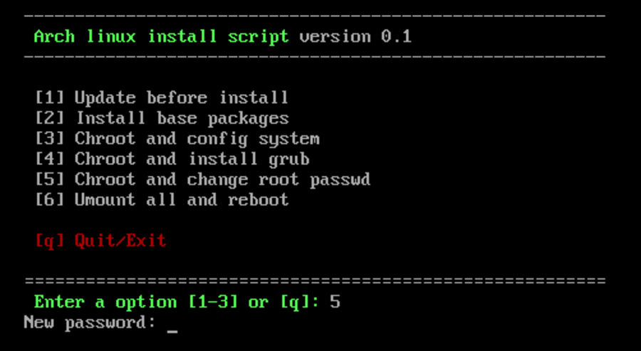
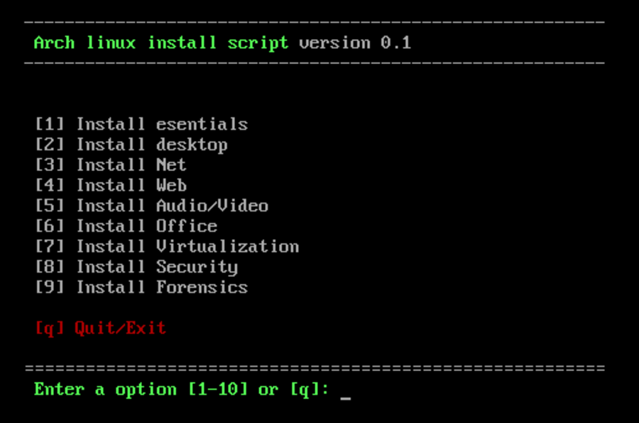

Automating arch linux instalation.
Table of contents
Automating the installation of Arch linux
I recently reinstalled my arch linux to reorganize my partitions and encrypt the home. I have been running smoothly since the last installation for more than 4 years but I have seen the need to reorganize the space. I had the home at 70% and the partition for virtual disks at 30% and a chaos in the organization, besides having installed partitions without encryption, etc.
At this point I decided, while installing arch, to create a script to automate the installation a bit. The truth is that I have the installation by hand since I have installed arch many times on different computers and virtual machines but it gets a bit tedious. I also hope that it helps others to try arch although it doesn’t convince me much that they only support systemd.
The script
You can find the script in my repository. Once you have started the arch installation cd, configured the keyboard and the internet connection, you only have to download the script and run it. Or if you can copy the script in some way, it can also help you configure the keyboard and network.
Main menu

Net config


Disk partition



Base sistem instalation

Instalando grub

Root password

Extra packages instalation

Post instal

back
References:
Licence: CC-BY-SA